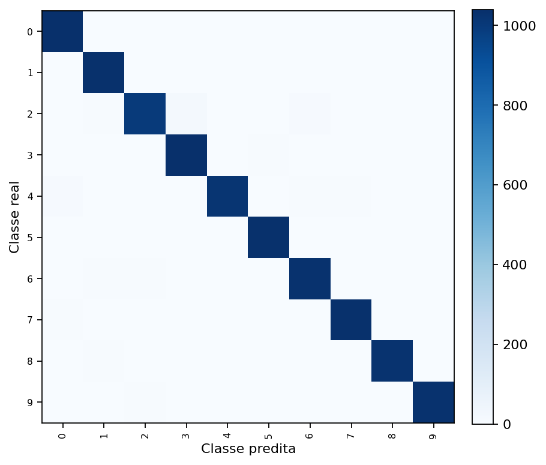
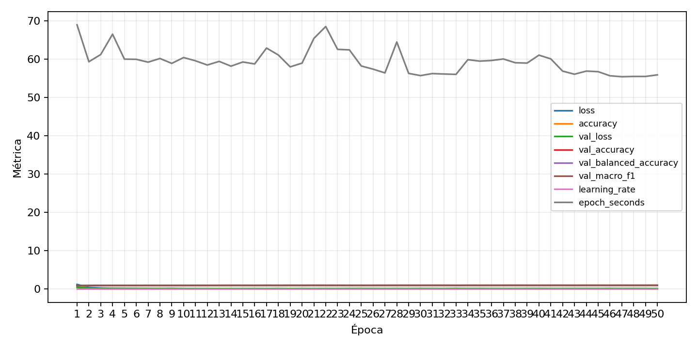

| n_samples | 10500 |
|---|---|
| loss | 0.11384185403585434 |
| accuracy | 0.9785714285714285 |
| balanced_accuracy | 0.9785714285714286 |
| macro_f1 | 0.9785548115005975 |


| Índice | Classe | Suporte | Precisão | Recall | F1 |
|---|---|---|---|---|---|
| 0 | 0 | 1050 | 0.9765258215962441 | 0.9904761904761905 | 0.9834515366430261 |
| 1 | 1 | 1050 | 0.9763481551561022 | 0.9828571428571429 | 0.979591836734694 |
| 2 | 2 | 1050 | 0.9793915603532876 | 0.9504761904761905 | 0.9647172547124215 |
| 3 | 3 | 1050 | 0.9674115456238361 | 0.9895238095238095 | 0.9783427495291902 |
| 4 | 4 | 1050 | 0.9826086956521739 | 0.9685714285714285 | 0.9755395683453237 |
| 5 | 5 | 1050 | 0.9875835721107927 | 0.9847619047619047 | 0.9861707200762994 |
| 6 | 6 | 1050 | 0.9671052631578947 | 0.98 | 0.9735099337748344 |
| 7 | 7 | 1050 | 0.9726672950047125 | 0.9828571428571429 | 0.9777356702984368 |
| 8 | 8 | 1050 | 0.9865125240847784 | 0.9752380952380952 | 0.9808429118773946 |
| 9 | 9 | 1050 | 0.9903846153846154 | 0.9809523809523809 | 0.985645933014354 |
{"adapter":"kmnist","balance_mode":"all_raw","class_names":["0","1","2","3","4","5","6","7","8","9"],"dataset":"kmnist","dataset_options":{},"dataset_root":"/home/msduda/datasets-tcc/kmnist","native_channels":1,"normalization":"unit_interval","num_classes":10,"protocol":{"checkpoint_monitor":"val_macro_f1","dtype_policy":"float32","early_stopping":{"patience":50,"restore_best_weights":true},"evaluation_augmentation":false,"input_channels":"native","op_determinism":true,"optimizer":"Adam","pretrained_weights":false,"qat_weight_bits":null,"reduce_lr_on_plateau":{"factor":0.3,"min_lr":1e-07,"patience":50},"resize":"proportional_padding","test_time_augmentation":false,"training_from_scratch":true},"seed":42,"source_fingerprint":"8928d478d8d23938a73b4f4a92c407bf3d74beff1e0e67e3644d6ecdc30cf828","source_manifest":{"class_names":["0","1","2","3","4","5","6","7","8","9"],"joined_samples":70000,"metadata":{"layout":"kmnist-component-npz"},"name":"kmnist","native_channels":1,"source_path":"/home/msduda/datasets-tcc/kmnist","splits":{"test":10000,"train":60000},"target_size":64},"target_size":64,"test_fraction":0.15,"train_fraction":0.7,"training":{"augmentation":{"brightness_delta":0.0,"contrast_lower":1.0,"contrast_upper":1.0,"cutout_max_frac":0.0,"cutout_prob":0.0,"flip_lr":false,"noise_std":0.0,"translate_frac":0.0,"zoom_max":1.0,"zoom_min":1.0},"batch_size":256,"default_image_size":64,"dtype_policy":"float32","early_stopping_patience":50,"extra_fraction":0.0,"image_size_overrides":{"gtsrb":128},"keras_verbose":1,"learning_rate":0.0003,"max_epochs":50,"preprocess_cache_max_mib":0,"qat_weight_bits":null,"reduce_lr_factor":0.3,"reduce_lr_min_lr":1e-07,"reduce_lr_patience":50,"shuffle_buffer_max_mib":0},"validation_fraction":0.15}
{"epochs_completed":50,"epochs_recorded":50,"evaluation_seconds":19.94792766599994,"fit_seconds_current_attempt":3304.8208620289997,"max_epoch_seconds":68.97144521899997,"max_epochs":50,"mean_epoch_seconds":59.12624674231911,"mean_train_examples_per_second":830.7147677190436,"median_train_examples_per_second":830.6818038530232,"min_epoch_seconds":55.42613980499982,"selected_checkpoint":"/mnt/e/tcc-benchmark/outputs/kmnist-quantization-2026-08-09/fp32/kmnist/runs/kmnist__unit_interval__all_raw__seed-42/checkpoints/best.keras","tensorflow_gpu_memory_after":{"GPU:0":{"current":5414656,"peak":462820352}},"total_seconds":2778.9335968889986,"training_seconds":2778.9335968889986,"wall_seconds_current_attempt":3328.8645238790004}
{"elapsed_seconds":3328.786779771,"event_counts":{"data_preparation_end":1,"data_preparation_start":1,"epoch_end":47,"evaluation_end":1,"evaluation_start":1,"fit_end":1,"fit_start":1,"periodic":654,"run_completed":1,"train_start":1},"generated_at":"2026-08-09T21:10:14.084+00:00","gpu_backend":"pynvml","interval_seconds":5.0,"metrics":{"cpu_percent":{"count":709,"max":21.3,"mean":12.677856135401974,"min":0.0,"p50":13.1,"p95":16.0},"disk_data_free_bytes":{"count":709,"max":998410174464.0,"mean":998271787730.1439,"min":998271578112.0,"p50":998271590400.0,"p95":998271598592.0},"disk_data_percent":{"count":709,"max":2.7,"mean":2.7,"min":2.7,"p50":2.7,"p95":2.7},"disk_data_total_bytes":{"count":709,"max":1081101176832.0,"mean":1081101176832.0,"min":1081101176832.0,"p50":1081101176832.0,"p95":1081101176832.0},"disk_data_used_bytes":{"count":709,"max":27837243392.0,"mean":27837033773.856136,"min":27698647040.0,"p50":27837231104.0,"p95":27837231104.0},"disk_output_free_bytes":{"count":709,"max":207166894080.0,"mean":207166268293.23553,"min":207165734912.0,"p50":207166078976.0,"p95":207166857216.0},"disk_output_percent":{"count":709,"max":79.3,"mean":79.3,"min":79.3,"p50":79.3,"p95":79.3},"disk_output_total_bytes":{"count":709,"max":1000186310656.0,"mean":1000186310656.0,"min":1000186310656.0,"p50":1000186310656.0,"p95":1000186310656.0},"disk_output_used_bytes":{"count":709,"max":793020575744.0,"mean":793020042362.7644,"min":793019416576.0,"p50":793020231680.0,"p95":793020489728.0},"elapsed_seconds":{"count":709,"max":3328.727337,"mean":1669.914636442877,"min":0.030999,"p50":1670.627457,"p95":3178.4142186},"gpu_count":{"count":709,"max":1.0,"mean":1.0,"min":1.0,"p50":1.0,"p95":1.0},"gpu_memory_percent":{"count":709,"max":52.43415832519531,"mean":49.70626118152871,"min":42.238473892211914,"p50":49.898529052734375,"p95":51.092529296875},"gpu_memory_total_bytes":{"count":709,"max":8589934592.0,"mean":8589934592.0,"min":8589934592.0,"p50":8589934592.0,"p95":8589934592.0},"gpu_memory_used_bytes":{"count":709,"max":4504059904.0,"mean":4269735323.6220026,"min":3628257280.0,"p50":4286251008.0,"p95":4388814848.0},"gpu_temperature_c":{"count":709,"max":57.0,"mean":46.634696755994355,"min":41.0,"p50":46.0,"p95":55.0},"gpu_utilization_percent":{"count":709,"max":100.0,"mean":39.043723554301835,"min":8.0,"p50":36.0,"p95":70.0},"process_cpu_percent":{"count":709,"max":214.1,"mean":164.5194640338505,"min":0.0,"p50":173.3,"p95":206.26},"process_read_bytes":{"count":709,"max":425349120.0,"mean":422426026.06488013,"min":211701760.0,"p50":425103360.0,"p95":425103360.0},"process_rss_bytes":{"count":709,"max":3253751808.0,"mean":3086845567.819464,"min":1122213888.0,"p50":3147153408.0,"p95":3241885696.0},"process_vms_bytes":{"count":709,"max":48024965120.0,"mean":47675358215.221436,"min":41774034944.0,"p50":47806820352.0,"p95":47941038080.0},"process_write_bytes":{"count":709,"max":1032192.0,"mean":1022139.7574047955,"min":4096.0,"p50":1032192.0,"p95":1032192.0},"ram_available_bytes":{"count":709,"max":15163097088.0,"mean":13345877212.976023,"min":13178425344.0,"p50":13280940032.0,"p95":13631343820.8},"ram_percent":{"count":709,"max":20.7,"mean":19.697884344146683,"min":8.8,"p50":20.1,"p95":20.6},"ram_total_bytes":{"count":709,"max":16619089920.0,"mean":16619089920.0,"min":16619089920.0,"p50":16619089920.0,"p95":16619089920.0},"ram_used_bytes":{"count":709,"max":3440664576.0,"mean":3273212707.0239773,"min":1455992832.0,"p50":3338149888.0,"p95":3430495846.4}},"sample_count":709,"schema_version":1}